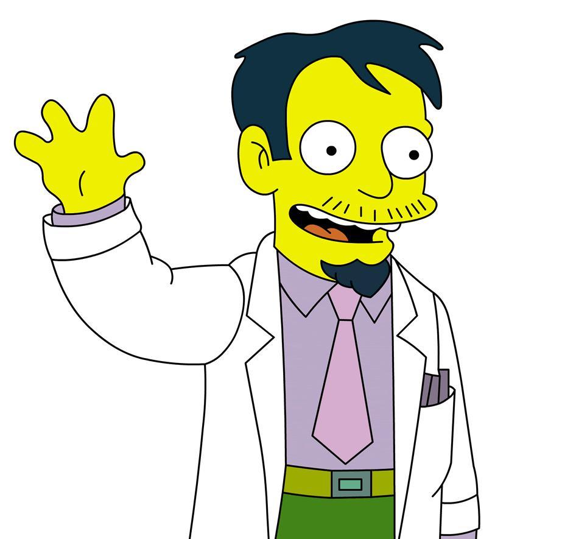

Dr Nick Riviera
The man who jeopardised a billion lives

Dr. Nick Riviera is a quack physician who studied at dubious medical schools
Further information about Nick Riviera
- Nationality: Riviera is of Hispanic descent and in the European Spanish dub, he is specifically given an Argentinian accent.
- Education: He has a medical degree from Hollywood Upstairs Medical College (where he apparently spent much of his time using his ability to acquire prescription drugs to impress a succession of attractive women back in the 1970s), and a great deal of luck.
- Professional History: Thus far, none of the patients he has swindled, maimed, or given useless or dangerous medical advice seems to have sued him (although a few have come after him in person.